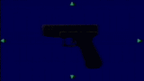
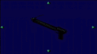
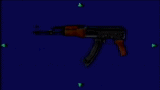
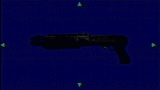
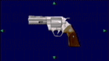
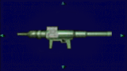
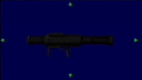
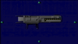
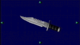

|
惡靈古堡～生存者２-----武器介紹
|
|
 Beretta M39R手槍 Claire用。基本裝備，分為AUTO和 MANUAL兩種模式，可以連放三發 或是單發射擊。 解決敵人時掉落物的機率：回復藥 10%、手槍10%、其他武器10% |
Gold Lugar手槍 Steve用。基本裝備，分為AUTO和 MANUAL兩種模式，可以連放三發 或是單發射擊。威力比M93R弱。 解決敵人時掉落物的機率：回復藥 6%、手槍6%、其他武器6% |
 火藥十字弓 Claire用。遊戲中少見的武器，命中 敵人後爆炸給予傷害，對付僵屍、 僵屍犬這類敵人有非常好的效果。 解決敵人時掉落物的機率：回復藥 5%、十字弓5%、其他武器5% |
|
 Ak47 Assault Rifle來福槍 Claire用。來福槍的攻擊力比Steve的 機關槍來得強，但是同樣不適合對 付強大的敵人。 解決敵人時掉落物的機率：回復藥 15%、來福槍5%、其他武器5% |
Ingram M-10機關槍 Steve用。這把槍的威力可說是相當 的弱，雖然射擊速度很快，但是遇 到棘手的敵人時還是換把槍吧。 解決敵人時掉落物的機率：回復藥 15%、機關槍5%、其他武器5% |
 Subass12.S.S散彈槍 Claire、Steve用。能一次大範圍攻擊 敵人是其特性，尤其近距離的攻擊 力非常好。 解決敵人時掉落物的機率：回復藥 5%、散彈槍5%、其他武器10% |
|
 Colt Pythonlt357麥林手槍 Claire用。擁有強大攻擊力的一把槍 ，無論面對何種敵人都適用，相對 數量也比較少。 解決敵人時掉落物的機率：回復藥 5%、麥林0%、其他武器20% |
M79榴彈槍 Steve用。攻擊力不錯，具有爆炸效 果，如要拿來對付砂蟲和Tyrant， 不如用手槍還比較有效。 解決敵人時掉落物的機率：回復藥 10%、榴彈槍10%、其他武器10% |
 Pz對甲硫彈EX Claire、Steve用。看起來似乎是不錯 的裝備，事實上威力比手槍還要弱 ，華而不實的武器。 解決敵人時掉落物的機率：回復藥 0%、對甲硫彈0%、其他武器0% |
|
 Rocket Launcher火箭砲 Claire、Steve用。儘管威力已經不及 線性發射器，但是這是可以正常取 得的最強武器。 解決敵人時掉落物的機率：回復藥 10%、火箭砲0%、其他武器20% |
 Sbass12線性發射器 Claire、Steve、Chris用。遊戲中最強 的武器，以隱藏武器的方式存在， 唯一比較可惜的是射擊時有死角。 解決敵人時掉落物的機率：回復藥 5%、線性發射器0%、其他武器10% |
 Combat Knife野戰刀 Rodrigo用。在以往遊戲中往往放在 道具箱中生灰塵的野戰刀，這次以 新的方式豋場了，不要小看它，在 近距離的攻擊力還滿不錯的。注意 使用光線槍就無法操作。 |
惡靈深淵Biohazard Abyss http://98.to/coolbio